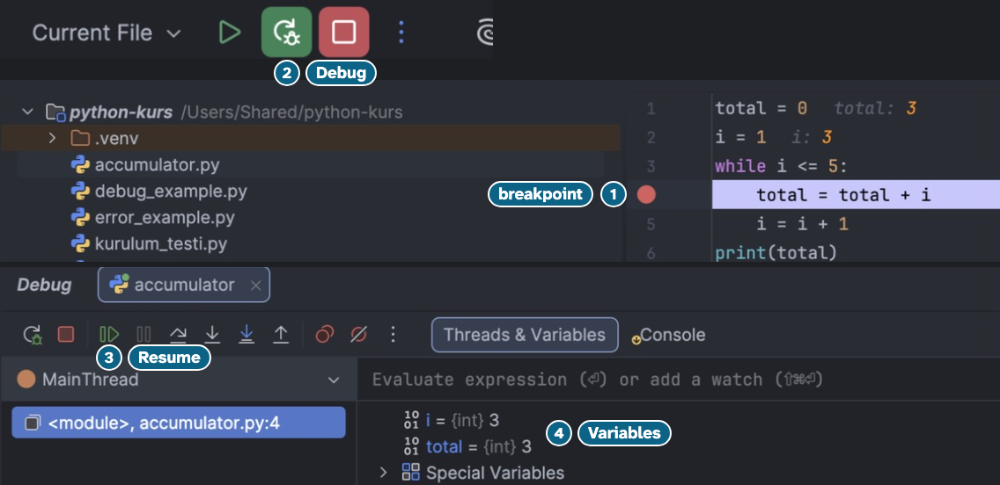
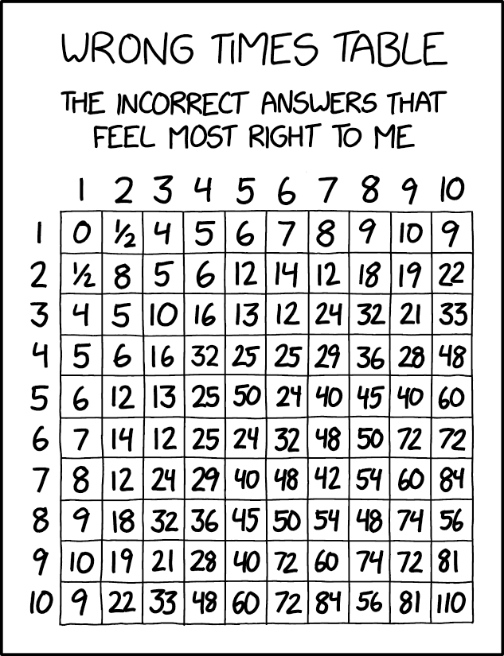

Introduction to Python
Ders 3: while, for, nested loops, break, continue, try ve assert
3 Kasım 2026, Salı, 18.00, E4
Nezih Arhan Tözenbilek
Hacettepe University, Department of Computer Engineering
IEEE Hacettepe University Student Branch, Güz 2026
Ders programı
Ders 3'ün hedefi
| 3A: tekrar ettirmek | 3B: loop'u ve hatayı yönetmek |
|---|---|
if, else, elif: programın kararı | range(): başla, bitiş, adım |
while ve devam şartı | str üzerinde for, nested loops |
counter, accumulator ve += | while True, break ve continue |
for loop | try, except ve assert |
Bu hafta bu iki şeyi öğreneceksiniz.
Aklınızda kalsın: loop her turun başında sorar.
Bir dersten istediğiniz kadar derse
Ders 3'ün hedef programı
Kaç ders? 2 1. dersin kodu: mat123 Kredi: 4 Puan (0-100): 66 MAT 123: 66 puan, katsayı 2.50 2. dersin kodu: fiz127 Kredi: 3 Puan (0-100): 77 FIZ 127: 77 puan, katsayı 3.00 Geçilen ders: 2/2 AGNO: 2.71
1. Karar kısmı: if, else ve elif
Programın karar veren yarısı
if
score = 66
if score >= 50:
print("geçti")
print("bitti")
geçti bitti
if bir şart sorar: True ise block çalışır, False ise atlanır.
Python ne yazdırır?
score = 66
print(score >= 50)
print(score == "66")
True TrueTrue FalseFalse False- Hata verir
66 bir int, "66" bir str; farklı type'lar eşit sayılmaz, hata da vermez.
if ve else
score = 40
if score >= 50:
print("geçti")
else:
print("kaldı")
print("bitti")
kaldı bitti
Şart False ise else'in block'u çalışır; iki yoldan tam biri.
Python ne yazdırır?
score = 50
if score > 50:
print("geçti")
else:
print("kaldı")
print(score >= 50)
geçti Truekaldı Truekaldı Falsegeçti False
50 > 50 False olduğu için else çalışır; 50 >= 50 ise True'dur.
Block ve IndentationError
score = 66
if score >= 50:
print("geçti")
if'ten sonraki satır girintili olmalı; block'u indentation belirler.
File "…/python-kurs/lesson3.py", line 3 print("geçti") ^^^^^IndentationError: expected an indented block after 'if' statement on line 2
Python ne yazdırır?
score = 66
attendance = 80
print(score >= 50 and attendance >= 70)
print(score >= 90 or attendance >= 90)
print(not score >= 50)
True False FalseTrue True FalseFalse False TrueTrue False True
and: ikisi de True; or: en az biri True; not: tersi.
elif
score = 70
if score >= 85:
print("A3 ve üstü")
elif score >= 50:
print("geçti")
else:
print("kaldı")
geçti
elif, üstteki şart False ise sorulan yeni bir şarttır.
elif merdiveni
score = 87
if score >= 95:
print("A1")
elif score >= 90:
print("A2")
elif score >= 85:
print("A3")
else:
print("A3'ün altında")
A3
Şartlar yukarıdan aşağı sınanır; ilk True olanın block'u çalışır.
if ve elif farkı
score = 90
if score >= 85:
print("A3 ve üstü")
if score >= 50:
print("geçti")
A3 ve üstü geçti
İki ayrı if'in ikisi de sorulur; elif olsaydı yalnızca ilki yazardı.
Python ne yazdırır?
score = 90
if score >= 50:
print("geçti")
elif score >= 85:
print("A3 ve üstü")
geçtiA3 ve üstügeçti A3 ve üstü- Hiçbir şey yazmaz
İlk True olan şartın block'u çalışır: 90 >= 50 True, gerisine bakılmaz.
Python ne yazdırır?
score = 40
if score >= 50:
print("geçti")
print("tebrikler")
print("bitti")
- Hiçbir şey yazmaz
bittitebrikler bittigeçti tebrikler bitti
İki print de if'in block'unda; girintisiz print her zaman çalışır.
2. while loop
Satırları bir şart True olduğu sürece tekrarlamak
Repetition (tekrarlama)
while loop (döngü)
Kopyalamak ve loop
if ve while
Block'un içi ve dışı
Block ve koşu turu
Her turda koşulur ve şınav çekilir; duş, turlar bitince bir kez alınır.
lap = 1
while lap <= 3:
print("koş")
lap = lap + 1
print("duş")
koş koş koş duş
Indentation ve duş
Duş satırı içeri kayarsa her turdan sonra duş alınır; Python hata vermez.
Python ne yazdırır?
i = 0
while i < 2:
i = i + 1
print("tur")
print("son")
tur sontur tur sontur son tur sontur tur son son
print("tur") block'un içinde, her turda çalışır; print("son") block'un dışında, bir kez çalışır.
while'ın üç parçası
while adım adım
Şart dört kez sorulur; dördüncüsünde False olur ve loop biter.
Infinite loop (sonsuz döngü)
Loop'un ortasından çıkmayı aradan sonra göreceğiz.
Python ne yazdırır?
i = 1
while i < 4:
i = i + 1
print(i)
1 2 32 32 3 41 2 3 4
Şart yalnızca turun başında sorulur; i'yi 4 yapan tur da print'e kadar gider.
3. Counter, accumulator ve +=
Loop'ta saymak ve toplamak
Counter (sayaç)
+=
++ ve SyntaxError
Accumulator
Accumulator ve kasa
Accumulator kasadaki toplam gibidir: önce 0, her ürünle büyür, sonda fişe yazılır.
Accumulator adım adım
Accumulator loop'tan önce sıfırlanır, içinde büyür, loop'tan sonra okunur.
Boşluğa ne gelmeli?
total = 0
i = 1
while i <= 3:
total += i
____
print(total) # 6 yazsın
i = 1i += 1total += 1break
i artmazsa şart hep True kalır; i += 1 ile üç tur: 1 + 2 + 3 = 6.
İki accumulator
Python ne yazdırır?
i = 1
while i <= 3:
total = 0
total = total + i
i = i + 1
print(total)
630- Hata verir
total = 0 loop'un içinde: her turda sıfırlanır, yalnızca son i kalır.
total = 0'ın yeri
Ortalama
Kağıdı Ay'a kadar katlamak
Debugger'da accumulator

Debugger programı adım adım yürütür ve value'ları gösterir.
4. for loop
Bir sıranın elemanlarını tek tek dolaşmak
for loop
for ve hedef program
for adım adım
range(4) 0, 1, 2 ve 3 verir; block dört kez çalışır.
for ve Spam
for i in range(4):
print("Spam")
Spam Spam Spam Spam
Block i'yi kullanmak zorunda değil: dört tur, dört satır.
Tablodaki ? kaç?
912810
Her turda total'e i * 2 eklenir: 6 + 3 * 2 = 12.
for ve accumulator
for ve while
for içinde if
Kural bir kez yazıldı, karar dört kez verildi.
if ile saymak
Python ne yazdırır?
total = 0
for i in range(1, 6):
if i % 2 == 1:
total += i
print(total)
15961 4 9
Yalnızca tek sayılar (1, 3, 5) toplanır; print loop'tan sonra bir kez çalışır.
Tur süreleri ve accumulator

total = 0
for i in range(4):
lap = int(input("Tur (ms): "))
total += lap
print("Toplam:", total)
Tur (ms): 82431 Tur (ms): 81976 Tur (ms): 82104 Tur (ms): 82650 Toplam: 329161
En hızlı tur
best'in ilk value'su
Yarış özeti
total = 0
best = 999999
for i in range(4):
lap = int(input("Tur (ms): "))
total += lap
if lap < best:
best = lap
minutes = total // 60000
seconds = total % 60000 // 1000
print(f"Toplam: {minutes} dk {seconds} sn")
print("En hızlı tur:", best)
Tur (ms): 82431 Tur (ms): 81976 Tur (ms): 82104 Tur (ms): 82650 Toplam: 5 dk 29 sn En hızlı tur: 81976
Tek loop toplamı da en hızlı turu da bulur.
for ve TypeError
Python ne yazdırır?
total = 0
for i in range(4):
total += i
print(total)
1064- Hata verir
range(4) 0, 1, 2 ve 3'ü verir: 0 + 1 + 2 + 3 = 6.
10 dakika ara
- 3A
- Tekrar ettirmek: while, counter, accumulator, for
- 3B
- Loop'u ve hatayı yönetmek: range(), str üzerinde for, nested loops, break, continue, try, except, assert
Sırada 3B
5. range()
Sayı üretmek: başla, bitiş ve adım
range()
range(<başla>, <bitiş>)
range() ve 14 hafta
range() ve başla
range() ve tek bir sayı
range() ve adım
range(<başla>, <bitiş>, <adım>)
Boşluğa ne gelmeli?
# 1, 3, 5 ve 7 yazsın
for i in range(____):
print(i)
1, 7, 21, 8, 20, 8, 21, 8
Bitiş dahil değil: 8'de durur. Adım 2 ile 1, 3, 5, 7.
range() ve negatif adım
Fencepost error
range ve type haritası
Python ne yazdırır?
for i in range(10, 0):
print(i)
print("bitti")
- Geriye sayar, sonra
bitti - Yalnızca
bitti - Hata verir
- Hiçbir şey
Range boş: block hiç çalışmaz.
Boş range
Ders 3'ün hedef programı
6. str üzerinde for
for, bir str'yi karakter karakter dolaşır
str üzerinde for
code = "MAT101"
for ch in code:
print(ch)
M A T 1 0 1
str de bir sıradır: for onun karakterlerini sırayla tek tek alır.
str üzerinde for ve if
code = "mat101"
digits = 0
for ch in code.upper():
if ch in "0123456789":
digits += 1
print(f"{code.upper()}: {digits} rakam")
MAT101: 3 rakam
Her turda bir karakter sınanır; rakamsa counter bir artar.
Python ne yazdırır?
word = "Hacettepe"
count = 0
for ch in word.lower():
if ch == "h":
count += 1
print(f"{word.upper()}: {count}")
Hacettepe: 1HACETTEPE: 0hacettepe: 1HACETTEPE: 1
lower() ve upper() yeni bir str verir, word değişmez; tek h var.
7. Nested loops
Bir loop'un içinde başka bir loop
Nested loops (iç içe döngüler)
Nested loops ve kapıcı
Nested loop, her katta o katın bütün kapılarına ekmek bırakan kapıcı gibidir.
for floor in range(1, 3):
for door in range(2):
print(floor, door)
1 0 1 1 2 0 2 1
Nested loops adım adım
Her dış turda iç for satırı j'yi yeniden 0'a bağlar.
Python ne yazdırır?
for i in range(1, 3):
for j in range(3):
print(i, j)
1 0 1 1 1 2 2 0 2 1 2 21 0 2 0 1 1 2 1 1 2 2 21 0 1 1 1 21 1 1 2 1 3 2 1 2 2 2 3
İç loop her dış turda baştan çalışır: i = 1 için j 0, 1, 2; sonra i = 2 için yine.
Çarpım tablosu

10 satır çarpı 10 sütun: iç loop'un block'u 100 kez çalışır.
count = 0
for i in range(1, 11):
for j in range(1, 11):
count += 1
print(count)
100
Satır kurmak
row boş str'den başlar; her turda bir * eklenir.
Satır kurmak ve dış loop
Satır kurmak ve range(i)
Karakterlerle bir halka
for y in range(-5, 6):
row = ""
for x in range(-11, 12):
d = (x / 2) ** 2 + y ** 2
if d >= 12 and d <= 30:
row += "#"
else:
row += " "
print(row)
Bir görüntü, satır ve sütunlara dizilmiş sayılardır; nested loops onu satır satır kurar.
#########
###############
###### ######
##### #####
#### ####
#### ####
#### ####
##### #####
###### ######
###############
#########
Nested loop ve indentation
turtle ile bir yıldız
Bu loop beş çizgiyle bir yıldız çizer.
for side in range(5):
pen.forward(200)
pen.right(144)
turtle ile 36 yıldız
Dış loop 36 kez döner; her turda bir yıldız ve 10 derece dönüş.
for i in range(36):
if i % 3 == 0:
pen.color("cyan")
elif i % 3 == 1:
pen.color("magenta")
else:
pen.color("yellow")
for side in range(5):
pen.forward(200)
pen.right(144)
pen.right(10)
Python ne yazdırır?
count = 0
for i in range(3):
for j in range(2):
count += 1
print(count)
5632
Dış loop 3 tur döner, her turda iç loop 2 tur: 3 × 2 = 6.
8. while True ve break
Bir loop'tan ortasında çıkmak
break
Akış, loop'tan sonraki ilk satırdan devam eder.
break ve dolmuş
break, dolmuşta "İnecek var" demek gibidir: kalan duraklar sizin için biter.
break adım adım
i 2 iken break çalışır; range'in 3, 4 ve 5'i hiç gelmez.
while True
while True adım adım
Her turun başında sorulan şart hep True; tek çıkış break.
Sentinel
total = 0
while True:
number = int(input("Sayı: "))
if number == 0:
break
total += number
print("Toplam:", total)
Sentinel, girdinin bittiğini bildiren özel bir value'dur; burada 0.
Sayı: 5 Sayı: 7 Sayı: 0 Toplam: 12
Sentinel adım adım
0 gelince break çalışır; 0 toplama eklenmez.
Sentinel ve ayırıcı çubuk
Sentinel, kasadaki ayırıcı çubuk gibidir: ürün değil, işarettir.
Puanda sentinel 0 değil, -1.
break ve nested loop
break ve SyntaxError
print(1)
break
File "…/python-kurs/lesson3.py", line 22 break ^^^^^3SyntaxError: 'break' outside loop1
Loop'un dışındaki break, dosyanın hiçbir satırını çalıştırmaz.
Python ne yazdırır?
for i in range(1, 10):
if i == 3:
break
print(i)
print("son", i)
1 2 3 son 31 2 son 91 2 son 31 2 son 2
i 3 olunca break print'ten önce çalışır; akış loop'tan sonra devam eder, i 3'te kalır.
9. continue
Loop'un yalnızca bir adımını bitirmek
continue
Akış loop'un başına döner; loop sonraki adımla devam eder.
continue ve çift sayılar
break ve continue
continue adım adım
-5'te continue: o adımda toplama yok, loop sürer.
continue ve while
Python ne yazdırır?
for i in range(5):
if i == 2:
continue
print(i)
0 1 2 3 40 1 3 40 12
continue yalnızca i 2 olan adımı bitirir; loop 3 ve 4 ile sürer.
10. try, except ve assert
Hatayı yakalayıp devam etmek ya da bilerek durmak
int(input()) ve ValueError
credits = int(input("Kredi: "))
print(credits * 2)
Exception (sıra dışı durum)
try ve except
Doğru girdi ve yanlış girdi
Girdiyi yeniden sormak
except ValueError ve NameError
Python ne yazdırır?
try:
x = int("3.5")
print("A")
except ValueError:
print("B")
BAA B- ValueError ile durur
int("3.5") hata verir; print("A") atlanır, except çalışır.
assert
try ve assert
Python ne yazdırır?
score = 120
assert score >= 0, "negatif"
print("A")
assert score <= 100, "100'den büyük"
print("B")
A BA, sonra AssertionErrorA, AssertionError,B- Yalnızca AssertionError
120 <= 100 False: AssertionError çıkar, program durur.
break, continue, except ve assert
| Ne zaman çalışır? | Sonra ne olur? | Sürer mi? | |
|---|---|---|---|
break | satırına gelince | loop'tan sonraki satıra geçilir | loop biter, program sürer |
continue | satırına gelince | loop'un başına dönülür | loop sürer |
except | try'da o exception çıkınca | except'in block'u çalışır | program sürer |
assert | şartı False olunca | AssertionError çıkar | program durur |
Dördü de akışı değiştirir; programı yalnızca assert durdurur.
Ders sonrası videolar
- Önce bunu izleyin
- CS50P, Lecture 2: Loops
- Daha fazlası
- CS50P, Lecture 2: Loops (for ve nested loops)
- Daha fazlası
- PY4E, Strings (str üzerinde for)
- Daha fazlası
- Corey Schafer, Loops and Iterations
- Daha fazlası
- CS50P, Lecture 3: Exceptions (try ve except)
- Derinlemesine
- Computerphile, Halting Problem in Python
İsteğe bağlı; bağlantılar Ek kaynaklar sayfasında.
Haftaya
Bugün neler yapabiliyorsunuz
Bugün bilgisayara ilk kez bir işi bıkmadan tekrar ettirdiniz.
- Bir işi while ve for ile tekrar ettirmek
- Counter ile saymak, accumulator ile toplamak
- break ile loop'tan çıkmak, continue ile bir turu atlamak
- try ile hatayı yakalayıp devam etmek, assert ile bilerek durmak